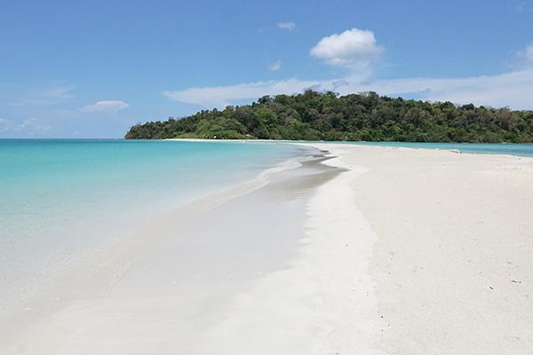

Ross Island
Step into the fascinating ruins of Ross Island, a destination where history and nature exist side by side amidst the tropical beauty of the Andaman Islands. Once the administrative headquarters of the British during colonial rule, the island now stands as a hauntingly beautiful reminder of the past. Old churches, administrative buildings, and colonial structures slowly reclaimed by giant tree roots create an atmosphere that feels both mysterious and captivating. Walking through the ruins surrounded by lush greenery and scenic sea views offers visitors a glimpse into a forgotten chapter of history. The peaceful environment, roaming deer, and panoramic coastal landscapes add to the island’s unique charm, making Ross Island a truly unforgettable destination.